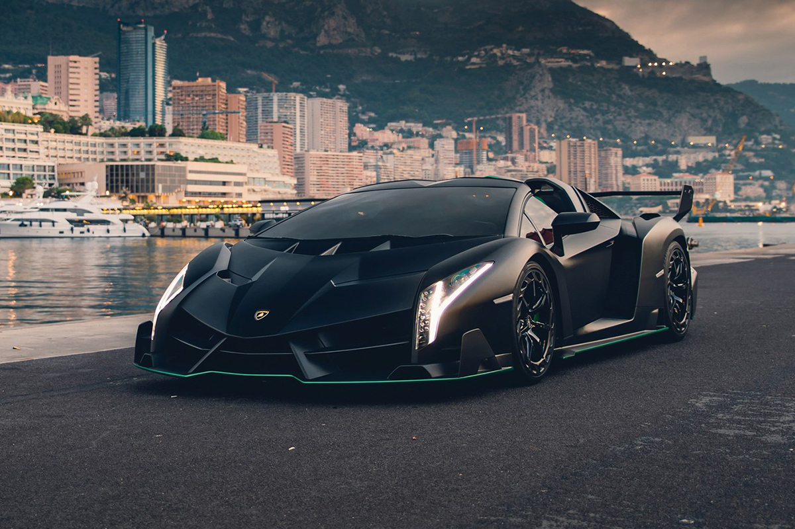

La Lamborghini Veneno est une supercar ultra-exclusive et de production extrêmement limitée qui a été dévoilée par Lamborghini en 2013 pour célébrer le 50e anniversaire de l'entreprise. Voici quelques détails clés sur la Lamborghini Veneno :


Hommage anniversaire :La Lamborghini Veneno a été créée en hommage au 50e anniversaire de Lamborghini. « Veneno » se traduit par « poison » ou « venin » en espagnol, reflétant les performances et le style extrêmes de la voiture.
Production : Lamborghini n'a produit qu'une poignée d'unités Veneno. Il y avait un total de 5 modèles de production : un pour les tests et le développement en usine, et trois pour les clients (deux coupés et un roadster). Ces quantités limitées en ont fait l'un des modèles Lamborghini les plus rares et les plus exclusifs.
Design :Le Veneno présente un design exceptionnellement agressif et aérodynamique. Il comprend des lignes angulaires et nettes, un aileron arrière massif et des éléments aérodynamiques uniques qui améliorent l'appui et la stabilité à grande vitesse.
Châssis et construction :Le châssis et la carrosserie de la voiture sont construits en fibre de carbone, assurant une structure extrêmement légère et rigide. La conception légère, ainsi que ses caractéristiques aérodynamiques, contribuent à ses performances remarquables.
Moteur : La Veneno est propulsée par un moteur V12 atmosphérique de 6,5 litres développant 740 chevaux. Le moteur est couplé à une transmission manuelle automatisée à sept rapports et à embrayage unique, et la puissance est envoyée aux quatre roues.
Performances : La Lamborghini Veneno est une supercar incroyablement rapide, capable d'accélérer de 0 à 60 mph en seulement 2,8 secondes et d'atteindre une vitesse de pointe d'environ 221 mph. Ses performances et sa maniabilité sont encore améliorées par des systèmes de suspension et aérodynamiques avancés.
Variante Roadster : En plus des trois versions coupé, Lamborghini a introduit plus tard une variante roadster de la Veneno. Seuls neuf roadsters ont été construits, augmentant encore l'exclusivité du modèle.
Intérieur : L'intérieur du Veneno présente un design minimaliste mais luxueux avec des éléments en fibre de carbone. Les sièges sont fabriqués à partir du matériau composite forgé breveté de Lamborghini pour des économies de poids supplémentaires.
Héritage : La Lamborghini Veneno est souvent considérée comme l'un des modèles Lamborghini les plus extrêmes et exclusifs jamais créés. Elle représente le summum de la performance, du design et de la prouesse technique, démontrant la capacité de Lamborghini à repousser les limites de la technologie des supercars.
Collection : La Veneno est très recherchée par les collectionneurs et les passionnés en raison de son extrême rareté et de son design unique. Elle est devenue une pièce de collection précieuse dans le monde des supercars.
La Lamborghini Veneno est une véritable hypercar, représentant l'incarnation de l'exclusivité, de la performance et de l'innovation technique au sein de la gamme Lamborghini. Sa production limitée et son design saisissant ont solidifié son statut d'automobile légendaire et hautement collectionnable.